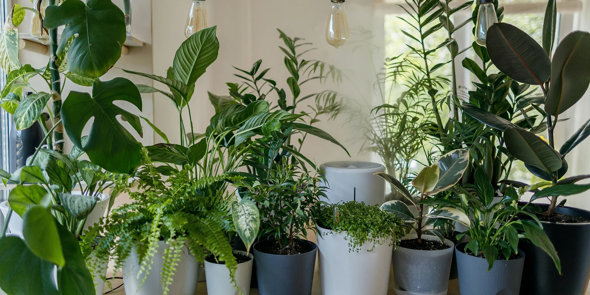
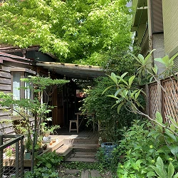
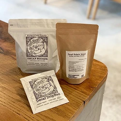
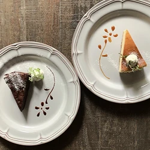
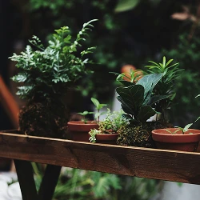
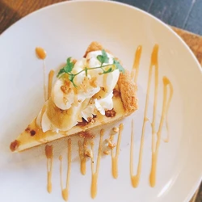
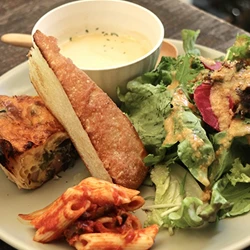
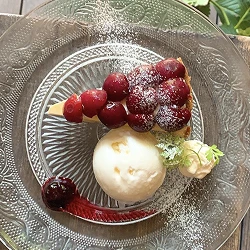
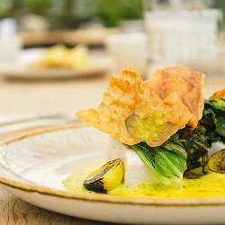

隠れ家カフェ
About — 私たちについて —
武蔵小杉でゆったり過ごせる
隠れ家カフェ
武蔵小杉・新丸子エリアで大好きなもを詰め込んだ小さなカフェ、、、はじめました。
手塗りの生成色の壁に木のぬくもりを感じる椅子とテーブル、お気に入りのソファーを一席どうぞ。
ひとりの時間を大切にしたいお客様の為に、カウンター席を多数ご用意しました。
棚には不思議なかたちの多肉植物やサボテン達、店先では季節の花鉢が静かにお出迎えしています。
全てのメニューを一つ一つ心を込めて手作りで、玄米や有機野菜、旬の食材を中心にした
毎日でも食べたくなる「体に優しい心が嬉しいお料理」です。
大好きなものたちを詰め込んだ隠れ家カフェ、ゆっくりとした時間が流れる、そんなカフェ空間です。
News — お知らせ —









Follow — SNS —
Shop — 店舗情報 —

- 店舗名
- HanaCAFE nappa69
- 所在地
- 〒211-0004
神奈川川崎市中原区新丸子東 【Google Maps】 - 電話番号
- 044-872-0000
- 営業時間
- オープン 11:00〜23:00
ランチタイム 11:30〜16:00
カフェタイム 15:00〜18:00
ディナータイム 18:00〜23:00
ラストオーダー 22:30
※月曜日、火曜日は17:00クローズになります。
※カフェメニューは終日ご注文頂けます。 - 備考
- Wi-Fiあり、電源のあるお席あり、お子様、ペットも大歓迎
Access — アクセス情報 —
HanaCAFE nappa69
〒211-0004
神奈川川崎市中原区新丸子東
TEL 044-872-0000
伏見稲荷神社の北側の小さな小道をお入りください。
東急東横線「新丸子駅」東口より徒歩2分
JR南武線「武蔵小杉駅」北口より徒歩5分
Reservation — 予約方法 —
ご予約はお電話または インターネット予約が可能です。